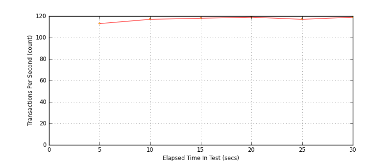
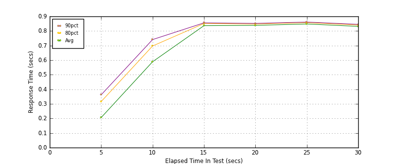
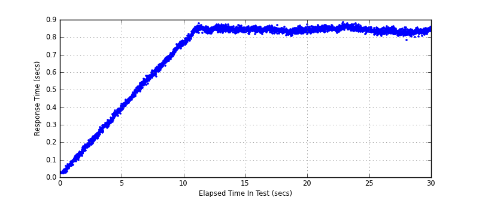

Performance Results Report
Summary
transactions: 3629
errors: 0
run time: 30 secs
rampup: 10 secs
test start: 2014-02-02 00:04:53
test finish: 2014-02-02 00:05:23
time-series interval: 5 secs
workload configuration:
| group name | threads | script name |
|---|
| user_group-1 | 100 | read_user.py |
All Transactions
Transaction Response Summary (secs)
| count | min | avg | 80pct | 90pct | 95pct | max | stdev |
|---|
| 3629 | 0.021 | 0.696 | 0.847 | 0.853 | 0.858 | 0.883 | 0.241 |
Interval Details (secs)
| interval | count | rate | min | avg | 80pct | 90pct | 95pct | max | stdev |
|---|
| 1 | 567 | 113.40 | 0.021 | 0.206 | 0.316 | 0.362 | 0.378 | 0.419 | 0.110 |
| 2 | 588 | 117.60 | 0.386 | 0.589 | 0.697 | 0.741 | 0.759 | 0.779 | 0.109 |
| 3 | 592 | 118.40 | 0.757 | 0.837 | 0.851 | 0.856 | 0.861 | 0.876 | 0.022 |
| 4 | 596 | 119.20 | 0.805 | 0.839 | 0.848 | 0.852 | 0.856 | 0.870 | 0.011 |
| 5 | 589 | 117.80 | 0.818 | 0.848 | 0.857 | 0.861 | 0.866 | 0.883 | 0.010 |
| 6 | 596 | 119.20 | 0.784 | 0.832 | 0.841 | 0.846 | 0.850 | 0.862 | 0.011 |
Graphs
Response Time: 5 sec time-series
Response Time: raw data (all points)
Throughput: 5 sec time-series

Custom Timer: get_tweets
Timer Summary (secs)
| count | min | avg | 80pct | 90pct | 95pct | max | stdev |
|---|
| 3528 | 0.020 | 0.695 | 0.847 | 0.853 | 0.858 | 0.883 | 0.241 |
Interval Details (secs)
| interval | count | rate | min | avg | 80pct | 90pct | 95pct | max | stdev |
|---|
| 1 | 567 | 113.40 | 0.020 | 0.206 | 0.316 | 0.362 | 0.378 | 0.419 | 0.110 |
| 2 | 588 | 117.60 | 0.386 | 0.589 | 0.697 | 0.741 | 0.759 | 0.779 | 0.109 |
| 3 | 592 | 118.40 | 0.757 | 0.836 | 0.851 | 0.856 | 0.860 | 0.876 | 0.022 |
| 4 | 596 | 119.20 | 0.805 | 0.838 | 0.848 | 0.852 | 0.856 | 0.870 | 0.011 |
| 5 | 589 | 117.80 | 0.817 | 0.848 | 0.857 | 0.861 | 0.866 | 0.883 | 0.010 |
| 6 | 596 | 119.20 | 0.784 | 0.832 | 0.841 | 0.845 | 0.850 | 0.862 | 0.011 |
Graphs
Response Time: 5 sec time-series

Response Time: raw data (all points)

Throughput: 5 sec time-series